v32 書いていて分かりにくかった所（4つ）
はじめての学生役の試しで出た点です。質問ごとに1つ選んでください。画面は本物のツールを開いて、案の部分だけ書き換えて写したものです（絵を押すと大きく見られます）。
図の下の空いている所を押しても、何も起きません。図のタイトルで Enter を押すと、図の上の段落の終わりに戻るので、次の文が図の前に入ってしまいます。
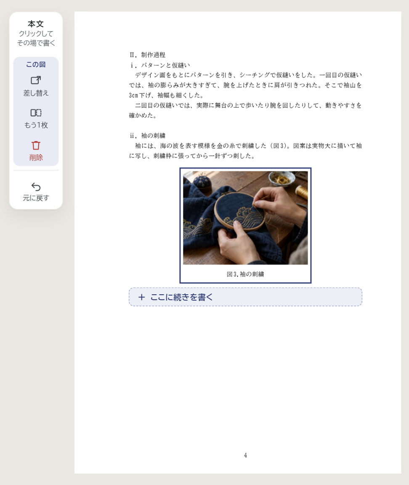
図を選んだところ（薄い行は PDF には出ません）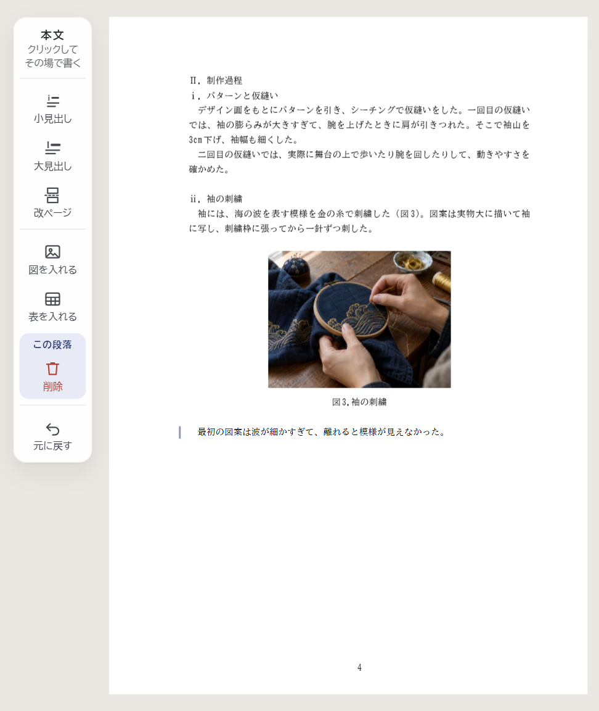
押したあと：図の後ろの段落で、続きを書く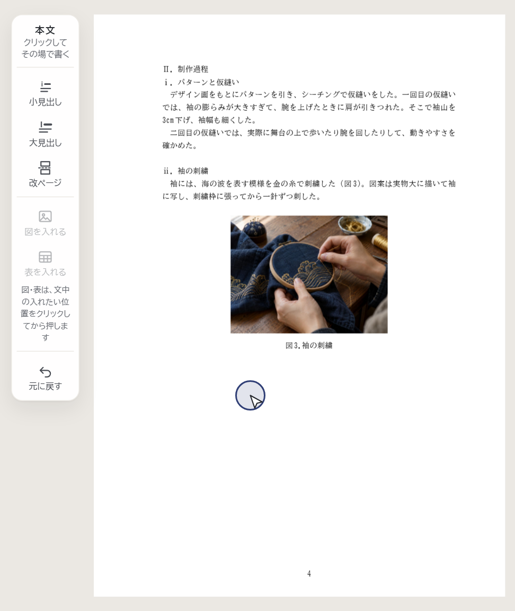
空いている所を押す（矢印と丸は説明のための印）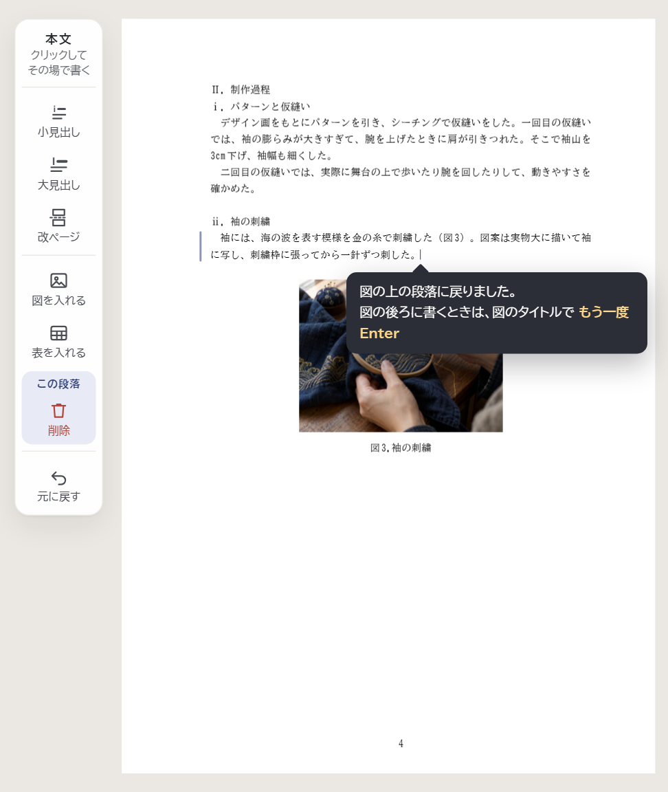
案C：吹き出しで知らせる削除したあと、スマホの「削除しました［戻す］」は5秒ほどで消え、PC には出ません。書く欄の「戻す」は、ほかのページの変更でも、何をどこに戻すか言わずに戻します。
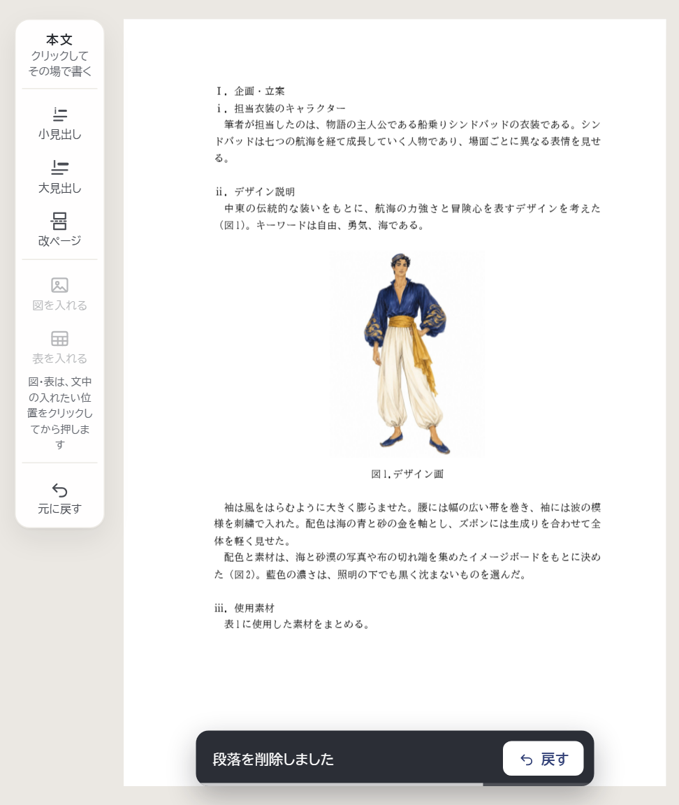
削除したところ（下の細い線は残りの時間）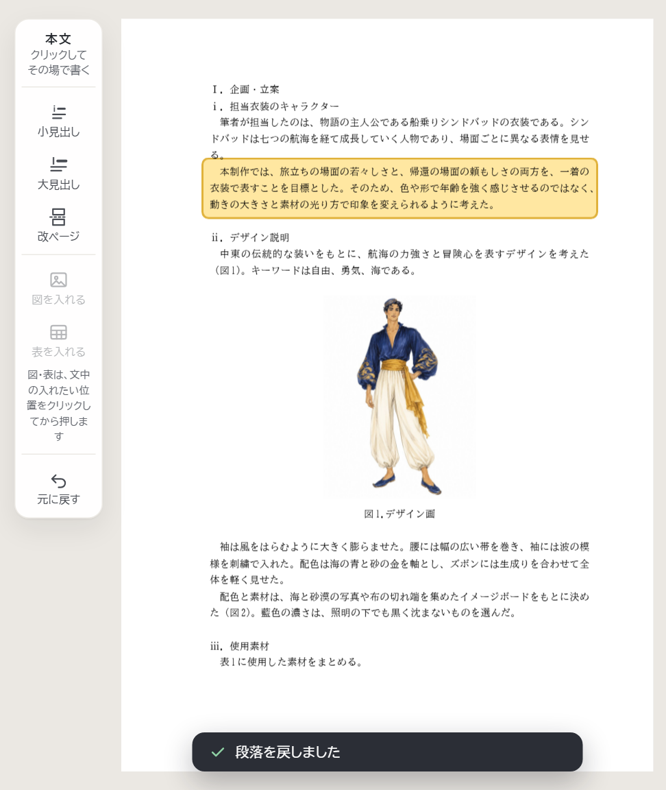
「戻す」を押したあと：戻った段落が光る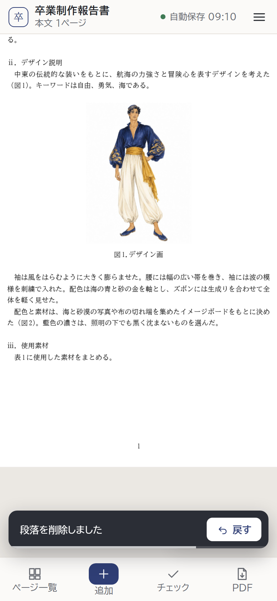
スマホ：削除したところ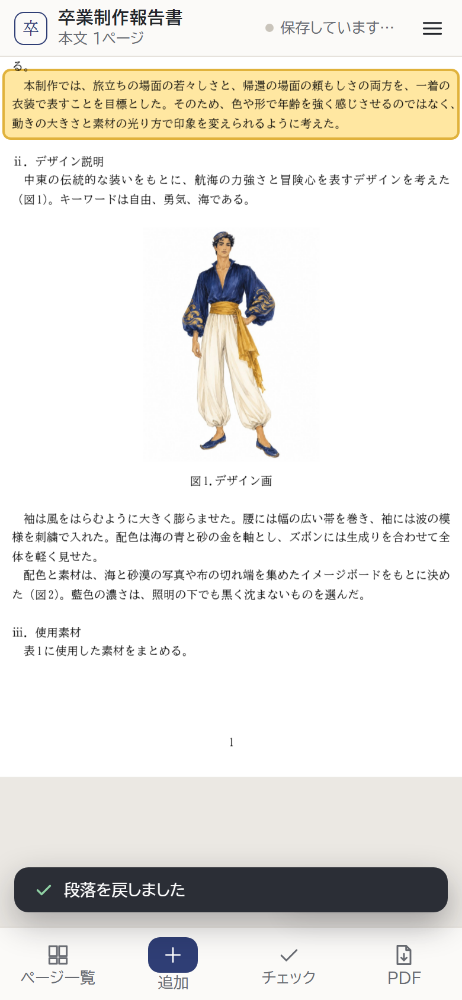
スマホ：戻したあと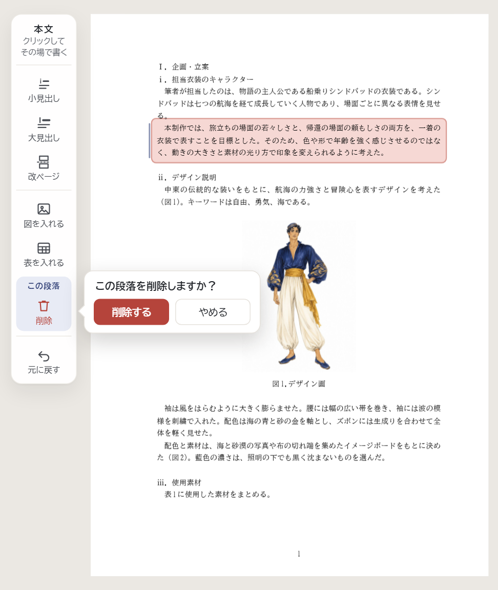
「削除」を押したところ（消える段落を赤く示す）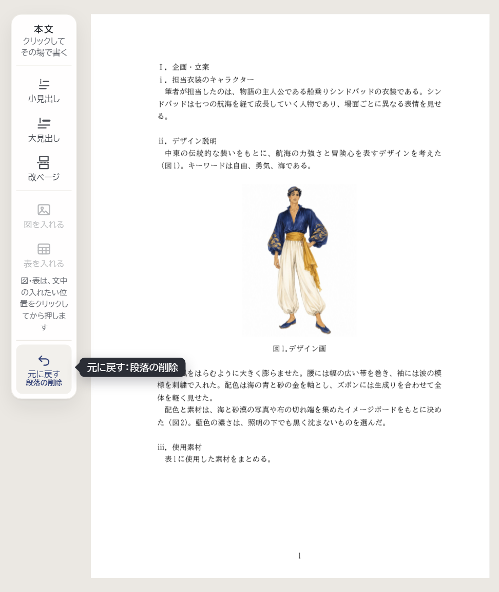
削除したあと（マウスを重ねると、黒い札も出る）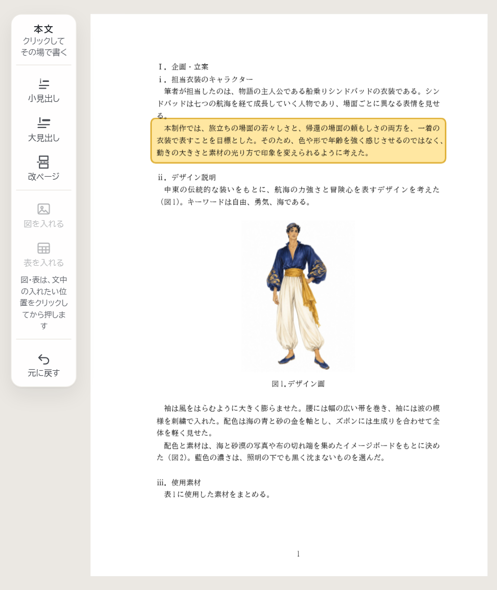
押したあと：戻った段落が光る作品写真は枠いっぱいに切り抜くので、縦長の写真は頭や裾が切れます。写真を押しても「差し替え」「外す」だけで、全体を入れる方法がありません。
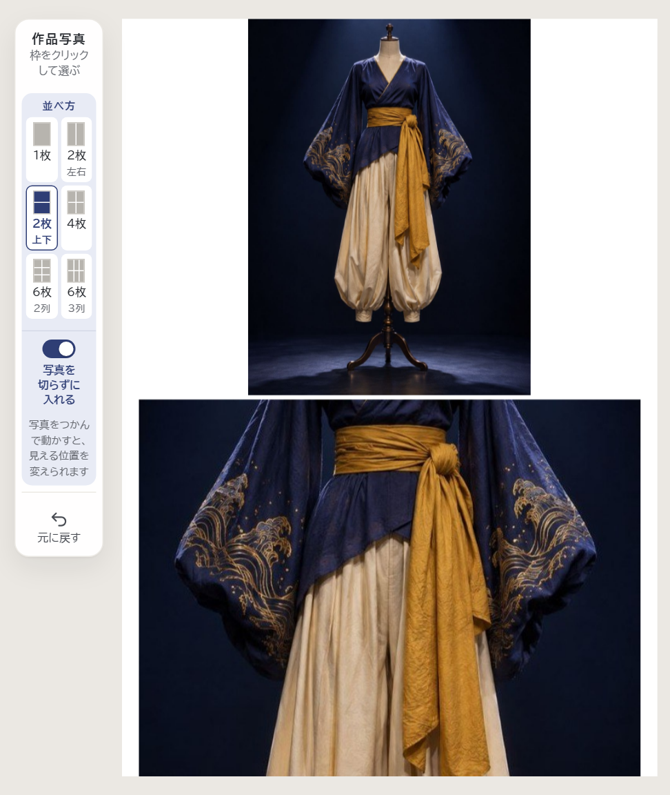
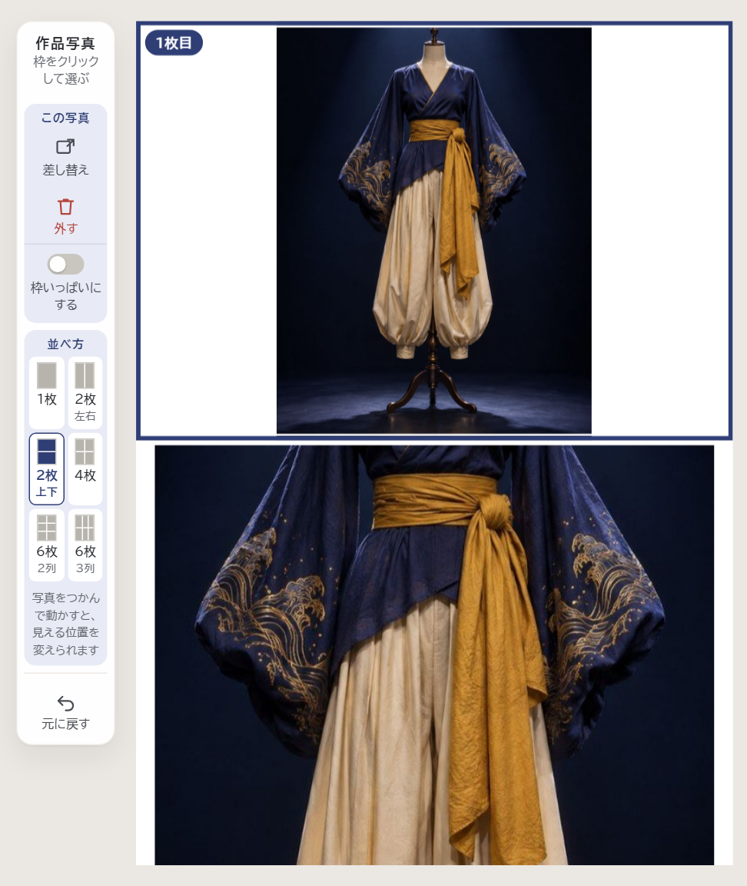
紙面の中の小さな案内（「（クリックして写真を選ぶ）」、抄録の「先生の許可が出た」とその説明）は 6px ほどで、指で広げられません。高さ 44px に足りないボタン（「直す」「完了」「あとで入力する」「＋引用・参考文献を入れる」、ページ送り）もあります。横向きでは紙面の幅が 160px ほどになります。